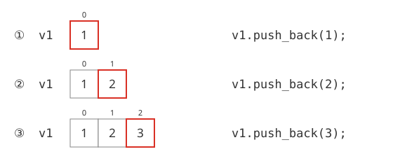
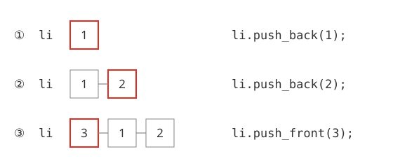
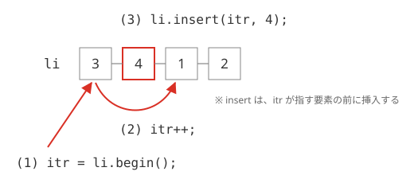

STL
STLとは
第4日目、第5日目にわたり、C++言語で最も大事な概念のひとつである、STLについて学習します。すでに述べたように、STLとは、Standard Template Library（標準テンプレートライブラリ）の略です。「標準」と名のつく通り、現在ではC++言語の標準的なライブラリとして広く用いられています。
配列とSTL
STLには、さまざまな機能がありますが、ここでは、配列関連のクラスについて扱います。具体的にいえば、vectorとlistを扱います。それらは、種類こそ違え、配列の概念を拡張したものです。
C言語ですでに学んだ配列は、あらかじめ大きさの決まったものでした。しかし、通常の配列は、ファイルの読み込みなど、あらかじめどのくらいの大きさの配列を確保したらよいかわからないようなケースには不向きです。そこで便利なのが、これらのクラスです。これらの機能はいずれもサイズを意識せずに使える配列として使えますが、それぞれ独自の特徴があります。ここでは、それらについて説明していくことにします。
vector
動的配列
まずは、一番最初にvectorについて説明します。vectorは、単純に、サイズを意識せずに使える配列で、動的配列(どうてきはいれつ）と呼ばれます。それに対し、今まで学習してきた、大きさが固定された配列のことを、静的配列と呼びます。
静的配列には、あらかじめ確保するメモリの容量がはっきりしているというメリットがありますが、どのくらいのメモリを確保しなくてはならないか不明確な場合には不向きです。そんな時便利なのが、この動的配列なのです。
サンプルコード
まずは、以下のサンプルを実行してみてください。
#include <iostream>
#include <string>
#include <vector>
using namespace std;
int main(){
vector<int> v1;
vector<string> v2;
v1.push_back(1);
v1.push_back(2);
v1.push_back(3);
v2.push_back("ABC");
v2.push_back("DEF");
unsigned int i;
for (i = 0; i < v1.size(); i++)
{
cout << "v1[" << i << "]=" << v1[i] << endl;
}
for (i = 0; i < v2.size(); i++)
{
cout << "v2[" << i << "]=" << v2[i] << endl;
}
return 0;
}
v[1]=2
v[2]=3
v2[0]=ABC
v2[1]=DEF
vectorの宣言と値の代入
では、実際にプログラムの流れを見ながら、vectorクラスの解説をしていきましょう。まずは、3行目を見てください。
vectorクラスを利用するには、ヘッダファイル、vectorをインクルードする必要があります。vectorクラスを利用する際には、必ずこのヘッダファイルをインクルードしてください。また、vectorに限らず、STLは、標準名前空間で利用されるので、かならず、標準名前空間を使えるようにしてください。(5行目参照)
続いて、vectorクラスの利用方法を見てみましょう。8行目、9行目を見てください。
vector<string> v2;
これは、テンプレートを用いて、配列の型を宣言しています。この場合、v1は、int、v2はstringの配列にしています。続いて、これに値を入れていくのが、10行目から14行目に現れるpush_back関数です。
v1.push_back(2);
v1.push_back(3);
v2.push_back("ABC");
v2.push_back("DEF");
これにより、v1の成分は、成分0から、1,2,3と設定されています(図4-1.)。stringを使っているv2についても同様で、最初から、"ABC"、"DEF"が入ります。

図4-1：vectorへのデータの挿入
配列のサイズの取得と、要素へのアクセス
以上のようにして、vectorに要素を挿入することができました。次は、要素のアクセスについて説明します。まず、要素の取得に先立ち、配列の大きさの取得方法を説明しましょう。vectorのサイズを取得するのは、size関数です。
listex4-1の16行目と20行目を見てください。v1および、v2に対し、size()メソッドを使って、サイズを取得し、要素にアクセスしています。要素のアクセスは、配列変数と同じで、[]の中に0から始まる番号を入れることにより、取得できます。
v[0] = 1; ← 値の代入
cout << v[0] << endl; ← 値の取得
このようにして、配列と同じように扱えるのが、vectorの特徴です。
vectorの主なメンバ関数
以上から、vectorの主なメンバ関数をまとめると、以下のようになります。（表4-1）
| 関数名 | 意味 |
|---|---|
| push_back() | 要素の追加 |
| clear() | 要素のクリア |
| size() | 配列の大きさを得る関数 |
| capacity() | 動的配列に追加できる要素の許容量 |
| empty() | 要素が空かどうかを調べる |
list
サンプルプログラム
続いてlistを使った簡単なサンプルを見てみましょう。まずは、以下のサンプルを実行してみてください。
#include <iostream>
#include <list>
using namespace std;
int main(){
list<int> li;
li.push_back(1); // 後ろにデータを挿入
li.push_back(2); // 後ろにデータを挿入
li.push_front(3); // 前にデータを挿入
list<int>::iterator itr;
// データの挿入
itr = li.begin(); // イテレータを先頭に設定
itr++; // 一つ移動
li.insert(itr,4); // 値の挿入
// データの表示
for (itr = li.begin(); itr != li.end(); itr++){
cout << *itr << " ";
}
cout << endl;
return 0;
}
listも、vector同様、クラスを利用するには、専用のヘッダファイルをインクルードする必要があります(2行目参照)。また、名前空間stdの利用も忘れてはいけません。(4行目参照)
データの挿入
listもvector同様、指定した型・クラスのデータを格納できます。プログラムを実行すると、まず8,9行目のpush_back関数の処理で、先頭から数値、1，2が挿入されます。そのあと、10行目で、先頭にデータが挿入され、この段階で、リストの中身は、{ 3,1,2 }となります（図4-2.）。
この点が、vectorとlistの大きな違いの一つです。vectorは動的配列であることから、配列のインデックスが変わってしまうような、前へのデータの挿入はできません。それに対し、listは、任意の位置に自由にデータを挿入することができるのです。

図4-2：listへのデータの挿入①
イテレータ
そのため、listには、vectorや配列のような、インデックスを使うことができません。では、listでは、どのようにして要素のアクセスするのでしょうか？そのカギを握るのは、イテレータと呼ばれるものです。これは、要素にアクセスする一種のポインタです。11行目で
と宣言されている変数itrが、この場合のイテレータになります。しかし、このままではイテレータは使うことができません。イテレータは、場所を宣言して使用する必要があります。それが、13行目のbeginメソッドです。これは、リスト内の先頭にアクセスすることを意味しています。
値の挿入
とすることにより、イテレータitrは、リストliの先頭の要素にアクセスできるようになります。さらに、14行目のitr++で、先頭より一つ後ろに移動します。次に、15行目でイテレータが指す要素の前に値を挿入しています（図4-3.）。

図4-3：listへのデータの挿入②
この処理により、listであるliの中身は、{ 3,4,1,2 }となります。
値へのアクセス
では、リストでこういった値へのアクセスをするにはどうすればよいのでしょうか？まず、listに設定されている値全体にアクセスする方法としては、イテレータのループをよく利用します。17行目をみてください。
前述のように、beginメソッドを用いれば、listの先頭にアクセスできます。さらに、endメソッドで、最後の要素の次の位置（終端）を得られます。そのため、このように先頭から終端にたどりつくまでインクリメントを繰り返すことにより、すべての要素にアクセスすることができます。なお、listの値へのアクセスは、イテレータの値を用います。このサンプルの場合、イテレータがitrですので、*itrによってアクセスします。
vectorとlistの違い
サンプルプログラム
さて、このようなvectorとlistは、一見大変似ているように思います。ではいったい、どこが違い、どこが同じなのでしょうか？そこで、ここでは両者の共通点と違いに注目してみましょう。
#include <iostream>
#include <string>
#include <vector>
#include <list>
using namespace std;
int main(){
vector<string> v;
list<string> l;
v.push_back("HELLO");
v.push_back("WORLD");
l.push_back("hello");
l.push_back("world");
l.push_back("!");
// vectorでのイテレータ
vector<string>::iterator i1;
list<string>::iterator i2;
for (i1 = v.begin(); i1 != v.end(); i1++){
cout << *i1 << endl;
}
// listの要素の削除
i2 = l.begin();
l.remove(*i2); // 要素の削除(listにしかできない）
for (i2 = l.begin(); i2 != l.end(); i2++){
cout << *i2 << endl;
}
}
WORLD
world
!
vectorとlistの共通点と違う点
19行目から21行目までが、vectorのイテレータです。つまり、vectorでも、listと同様、イテレータを使用することができます。
それに対し、23行目から24行目の処理は、listでしか使えません。removeは、listの中から、指定した値と一致する要素をすべて除去してくれます。しかし、このメソッドは、vectorには存在しません。
vectorとlistの特徴
一見似たような概念のvectorと、listですが、考え方には根本的に違いがあります。vectorは、あくまでも配列の延長上の概念で、サイズを最初に指定しなくても使えることが主眼になっています。そのため、任意の場所に要素を追加したり、削除したりすることが使用の主な目的ではありません。
それに対し、listは、双方向連結リストと言い、任意の場所の要素が削除されたり、挿入されたりするような使用方法を想定しています。したがって、要素の位置や順番が変化することから、配列とは異なり、インデックスで管理することはできません。そのため、管理はもっぱらイテレータを使うことになります。
listの主なメソッド
最後に、listクラスの主なメンバ関数を紹介しておきます(表4-2.)。
| 関数名 | 意味 |
|---|---|
| push_front() | 先頭に要素を追加する。 |
| push_back() | 末尾に要素を追加する。 |
| pop_front() | 先頭の要素を削除する。 |
| pop_back() | 末尾の要素を削除する。 |
| insert() | 要素を挿入する。 |
| erase() | 要素を削除する。 |
| clear() | 全要素を削除する。 |